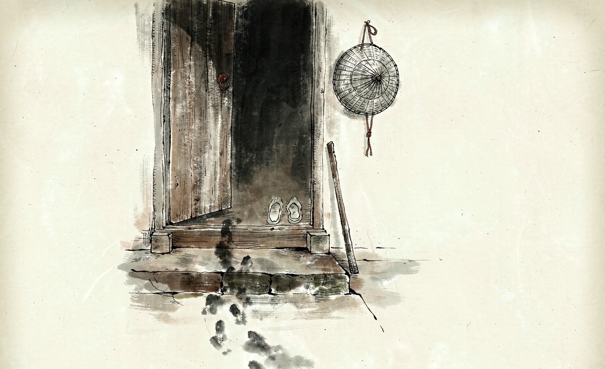
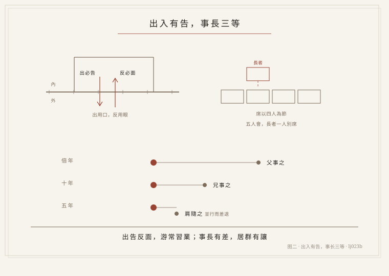

曲礼上 · 一·二十四 · 第 23 课
这一节先讲门槛：出去要说一声，回来要见一面。再讲在外做什么，得让父母问得着。后半转出一套「事长」的差等，末一句说席上让位。
说什么事：出必告，反必面；所游必有常，所习必有业；恒言不称老；年长以倍则父事之，十年以长则兄事之，五年以长则肩随之；群居五人，长者必异席。
落在哪一层：教。上节在屋里的四不中，是让位置；这节从门槛上跨出去，是让人知道你去哪儿。
为何编在此位：一·二十三收在门内，此节从门口起算：先立「出入」，再立「在外」，最后立「与人同在」。
【经】夫為人子者，出必告，反必面。所遊必有常，所習必有業。恆言不稱老。年長以倍，則父事之；十年以長，則兄事之；五年以長，則肩隨之。群居五人，則長者必異席。
出必告，反必面 郑注：「告、面同耳，反言面者，从外来，宜知亲之颜色安否。」疏：「此一节亦明人子事亲之法，游方习业，及汎交之礼。」
所游必有常，所习必有业 郑注：「缘亲之意，欲知之。」——亲之所以要问，是因为有可问处：去处一定，所习一定，问便有答。
恒言不称老 郑注：「广敬。」疏：「老是尊称，若其称老，乃是己自尊大，非是孝子卑退之情……言广者，非但敬亲，因敬亲广敬他人。或云子若自称老，父母则甚老，则感动其亲，故舜年五十而慕是也。」
年长以倍，则父事之 郑注：「谓年二十於四十者，人年二十，弱冠成人，有为人父之端。今四十於二十者有子道。《内则》曰：『年二十，惇行孝弟。』」疏辨其数：「人年三十而娶，於后乃有子，则三十於六十，乃是倍年。今郑言二十於四十者……约之为倍年也。」
十年以长，则兄事之 疏：「谓年二十於三十者，全倍者父事之，半倍，故兄事之也。凡事之，则正差退而雁行也。」
五年以长，则肩随之 郑注：「肩随者，与之并行差退。」疏：「谓并行而差退……此谓二十於二十五者肩随，则齐於雁行也。」又：「若未二十童子则无此礼，以其不能惇行孝弟。」
事之之实 疏一句最要紧：「然则以此肩随而推之，上云父兄事之，岂是温凊如亲，正言其或行来坐席，推前相类耳。」——「事」不是侍奉如父母，是行走坐席的先后。
群居五人，则长者必异席 郑注：「席以四人为节，因宜有所尊。」疏：「群，朋友也。古者地敷横席而容四人，四人则推长者居席端。若有五人会，应一人别席，因推长者一人於异席也。」熊氏：「既长者一人异席，馀则四人矣。」
做人家儿子的，出门一定要禀告，回来一定要见面。所去之处要有定处，所学之事要有定业。平常说话不自称「老」。年岁长我一倍的人，以父礼待之；长我十岁的，以兄礼待之；长我五岁的，并行而略退在后。朋友聚处有五人，长者须另坐一席。
前三句是一件事的三面：叫人知道你去哪儿（告、面），叫人问得着你（常、业），叫人不因你而自大（不称老）。后两句是同一个理往外推：凡比我长的，我都退一步；凡与我同处的，长者先占一处。全节没有一条讲「我该得什么」，只有「我该让到哪里」。
甲·一出一入
第一层 「告」与「面」是一件事的两头 郑注明言「告、面同耳」，而字有分别：出去时只需说，回来时要见面。理由也给了：「从外来，宜知亲之颜色安否。」——出门时你报的是行止，进门时你要看的是颜色。一句「我出去了」是交代，一眼「我回来了」是看亲今日好不好。同一件事，去时用口，回时用眼。
第二层 有常、有业，才谈得上「知道」 郑注四个字：「缘亲之意，欲知之。」亲之所以要问，不是查你，是心里悬着。故必使所游有常处、所习有定业——有常，则问时答得出；有业，则问时拿得出手。这一条把「孝」从态度拉成了可交代的事实：不是「你放心」，是「你问得着」。
第三层 「恒言不称老」是「广敬」 疏解「广」字：「非但敬亲，因敬亲广敬他人。」——敬亲之心溢出，才不拿「老」字自居。又存一说：「子若自称老，父母则甚老，则感动其亲，故舜年五十而慕是也。」二说一外一内：一说是不敢自尊，一说是怕亲听见了心里难过。后者更近人情，前者更合注文。
乙·事长三等
第四层 差等不是估计，是算法 郑注把「倍」落到年数：二十于四十为倍。疏又问：人三十而娶，三十于六十才是真倍，郑何以取二十于四十？答得干脆：二十加冠成人，「有为人父之端」，四十于二十「有子道」，故「约之为倍年」。这是把礼的尺度落在「成人」这个节点上，不落在生育事实上。
第五层 父事、兄事、肩随，是三个退让的幅度 疏：「全倍者父事之，半倍，故兄事之也。」十岁为半倍，五岁为再半，退的幅度也就分三等：父事是全退，兄事是差退而雁行，肩随是并行而稍后。三等之间没有跳档，只有渐次——礼的精密处，全在这种「差一点」上。
第六层 「事之」不是「温凊如亲」 疏一句拦住后世无限引申的话：「岂是温凊如亲，正言其或行来坐席，推前相类耳。」父事之，不是真去给人晨昏定省，只是走路让人先、坐席让人上。把比喻当成本事，礼就变成了伪；知道它只是「推前相类」，礼才是可行的。
丙·群居异席
第七层 「席以四人为节」 郑注给出数目：一席容四人。疏引熊氏推之：「既长者一人异席，馀则四人矣。」故五人同处，不是挤一挤，是另设一席给长者。数目在此不是排场，是「有所尊」的办法：位置不够时，先给尊者腾出一个来。
与今日何干 今日讲「独立」，多是把行踪当成私事；此节反过来，把行踪做成可交代的事。告与面、常与业，是让亲近的人有知情的位置；不称老，是不拿岁数压人；三等事长，是把「尊敬」化成可以操作的先后。全节没有一个「不许」，都是「往后退一寸」——退一寸，别人才有立足处。
| 左 | 右 |
|---|---|
| 出必告：报行止 | 反必面：知亲之颜色安否 |
| 所游必有常 | 缘亲之意，欲知之 |
| 所习必有业 | 业有定，亲可问 |
| 恒言不称老 | 广敬：老是尊称 |
| 年长以倍，则父事之 | 郑以二十於四十为倍 |
| 十年以长，则兄事之 | 半倍，雁行而差退 |
| 五年以长，则肩随之 | 并行而差退，非温凊如亲 |
| 群居五人，长者必异席 | 席以四人为节 |

